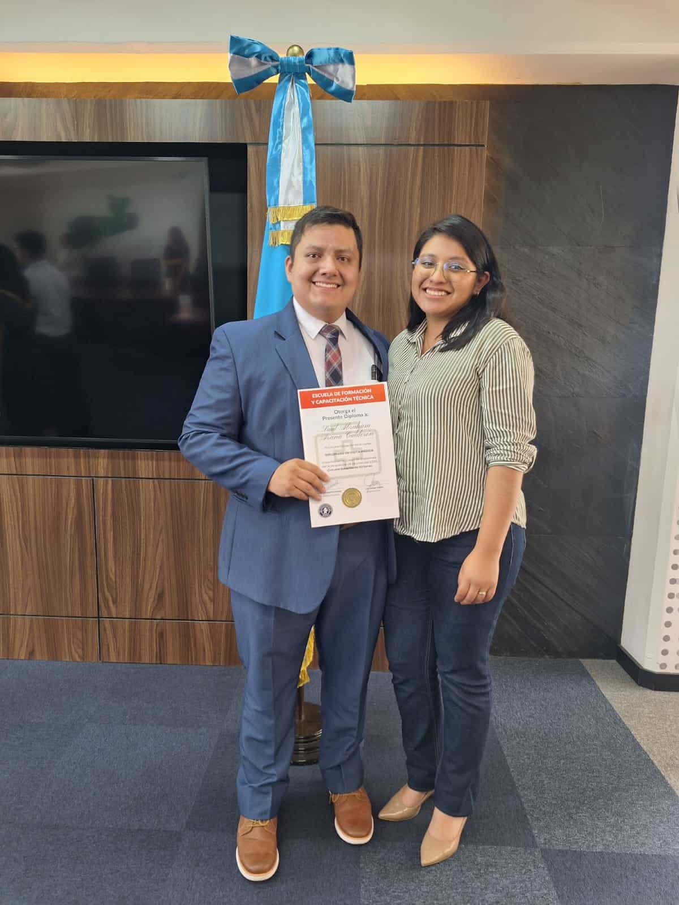

Saúl Abraham Arana Calderón | WDD 130
Hello! My name is Saúl Abraham Arana Calderón, and I am from Guatemala. I like playing video games and learning about technology because I love it when technology helps make our lives easier.
Hello! My name is Saúl Abraham Arana Calderón, and I am from Guatemala. I like playing video games and learning about technology because I love it when technology helps make our lives easier.